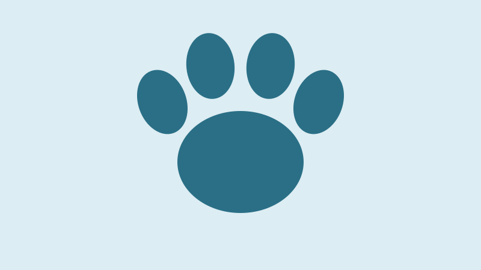
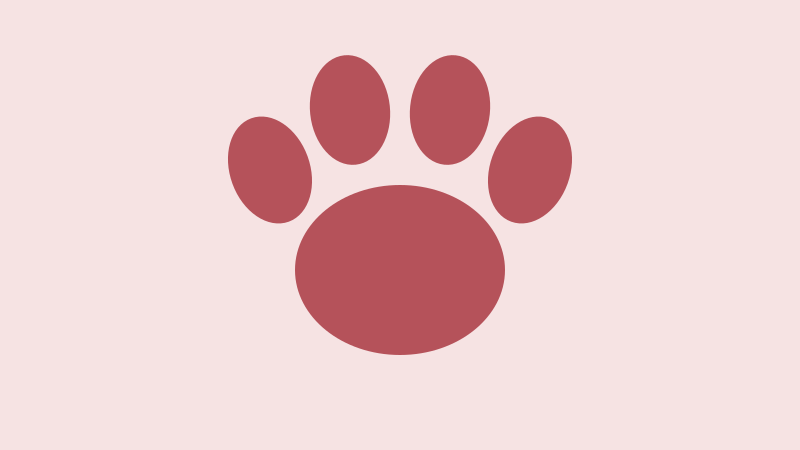
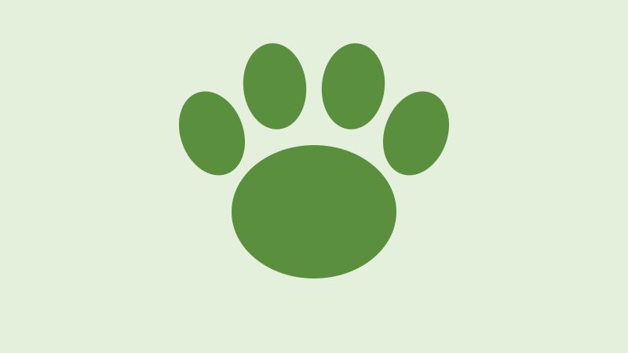

Adote um Amigo
Feiras de adoção aos sábados, com entrevista e acompanhamento.
Impacto: 2.800 adoções desde 2015.
Na Patas em Casa, desenvolvemos projetos que têm como objetivo transformar a vida de animais em situação de abandono ou vulnerabilidade. Nossas ações envolvem resgate, cuidados, castração, adoção responsável e conscientização da comunidade.

Feiras de adoção aos sábados, com entrevista e acompanhamento.
Impacto: 2.800 adoções desde 2015.

Castração gratuita para animais de famílias de baixa renda.
Impacto: 4.500 castrações realizadas.

Famílias abrigam filhotes e animais em recuperação até a adoção.
Impacto: 60 lares na rede.
Ajude como passeador, na feira de adoção, no transporte de animais, em fotos ou como lar temporário. Você recebe certificado digital de participação.
Quero me cadastrar
Toda doação vai para ração, vacinas e tratamentos.